Liquid dropper · 2 fl oz (60 mL) · Adults 18+ · Never replaces medicine
GlycoPezil: A Daily Liquid Formula Marketed To Support Healthy Blood Sugar Levels
GlycoPezil is a liquid for adults who want one more supportive step alongside the food, movement and medical care that manage blood sugar. You take one or two droppers a day, with no pills to swallow. The seller markets it to older adults as "senior-safe" and says it regenerates pancreatic cells and stabilizes glucose. We read that far more carefully: it is not a treatment for diabetes, it must never replace insulin or any medicine, its label shares 200 mg between 22 ingredients with no split, no study of the liquid is shown, and some ingredients can lower blood sugar further or interact with medicines. Very low or very high blood sugar with confusion is an emergency. This page explains the label, the safety points, the three bottle prices and the 60-day refund, including a 180-day mix-up.*
- One or two droppers a day, per the label
- A full Supplement Facts panel to read line by line
- Safety notes for diabetes medicine and low blood sugar
- A 60-day guarantee, after 30 days of use
- 1Doctortell them about the drops
- 2Medicinesnever stop or change them
- 3Labelread it line by line
- 4Dropsan optional extra
| Shaking, sweating or confusion? | Treat low sugar, call a doctor |
| Extreme thirst, vomiting, fast breathing? | Emergency care |
| On insulin or any diabetes tablet? | Ask first |
Secured payment • Encrypted checkout • 60-day guarantee
Related: Sugar claims we skip · FAQ · The blog
*These statements have not been evaluated by the Food and Drug Administration. This product is not intended to diagnose, treat, cure or prevent any disease.
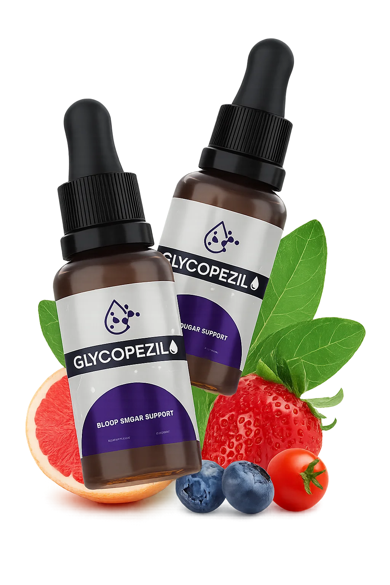
An animated teaching sketch, not data. Illustration.
At A Glance
What The GlycoPezil Label And Seller Say About Quality
The label is the document to rely on; the rest is the seller's wording.
Made In The USA
The label adds "with globally sourced ingredients".

GMP Practice
Good Manufacturing Practice, per the brand.
- FDA registered site
Facility Note
The label says so; not an FDA approval.
- One-time order
No Auto-Renewal
Per the seller's page.
The seller also shows "FDA Approved", "100% natural", "GMO free" and "doctor formulated" badges. The FDA does not approve supplements, the formula contains preservatives and sweeteners, and no doctor or testing is documented, so none of those is used here. See the quick answers and the sugar claims we skip.
Talk to your doctor first, then read the checkout.
60-day guarantee · Buying checklist · Bottle prices
What Is It
What Is GlycoPezil, As Shown On The Bottle And Page?
GlycoPezil comes in an amber glass dropper bottle with a purple and white label, "Blood Sugar Support", Dietary Supplement, 2 fl oz / 60 mL.*
The label lists 0.7 mcg of chromium and a 200 mg proprietary blend of 22 ingredients per 1 mL serving, 60 servings a bottle, with glycerin, stevia, xylitol and preservatives, and says to take 1 or 2 droppers daily.
It is a dietary supplement for adults: not a drug, not FDA approved and not a treatment for diabetes.
Related: The 22 ingredients · What a 200 mg blend hides · Label gaps
Read The Ingredients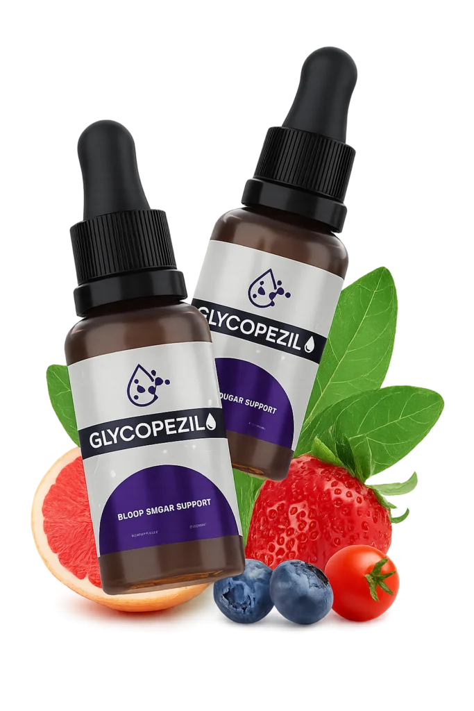
Seller artwork, as supplied. The bottle art spells "Suport"; the label spells it Support.
Pricing
GlycoPezil Prices: From $49 A Bottle
Three packs, with free US shipping on the larger two.
Starter
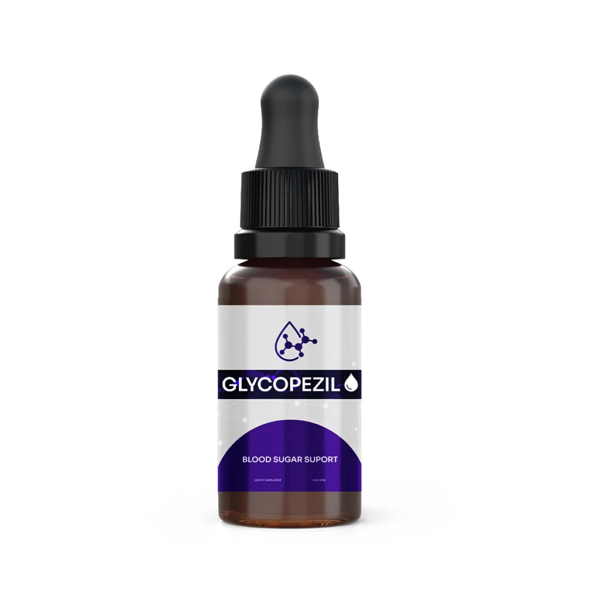
- 60-day supply (seller)
- + shipping (see note)
- 60-day guarantee, 30 days of use first
Good Value
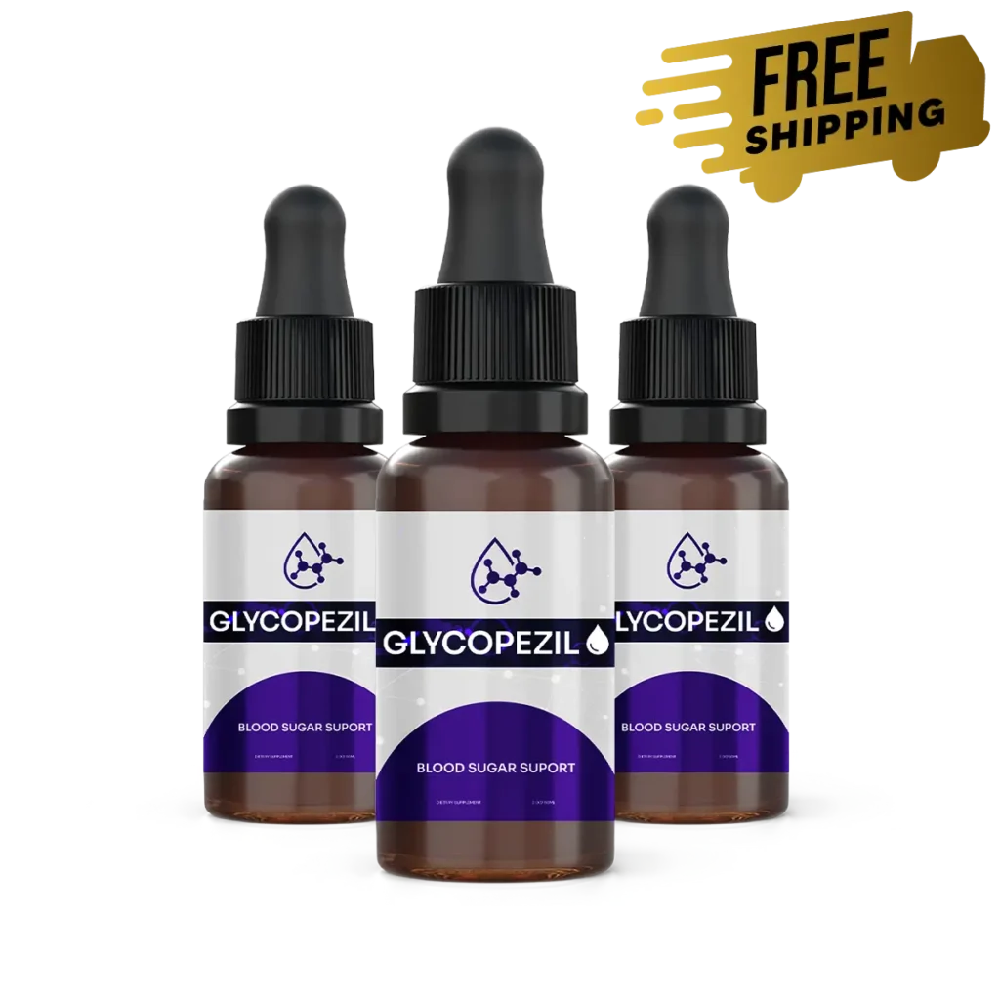
- 90-day supply (seller)
- Free US shipping
- 60-day guarantee, 30 days of use first
Best Value
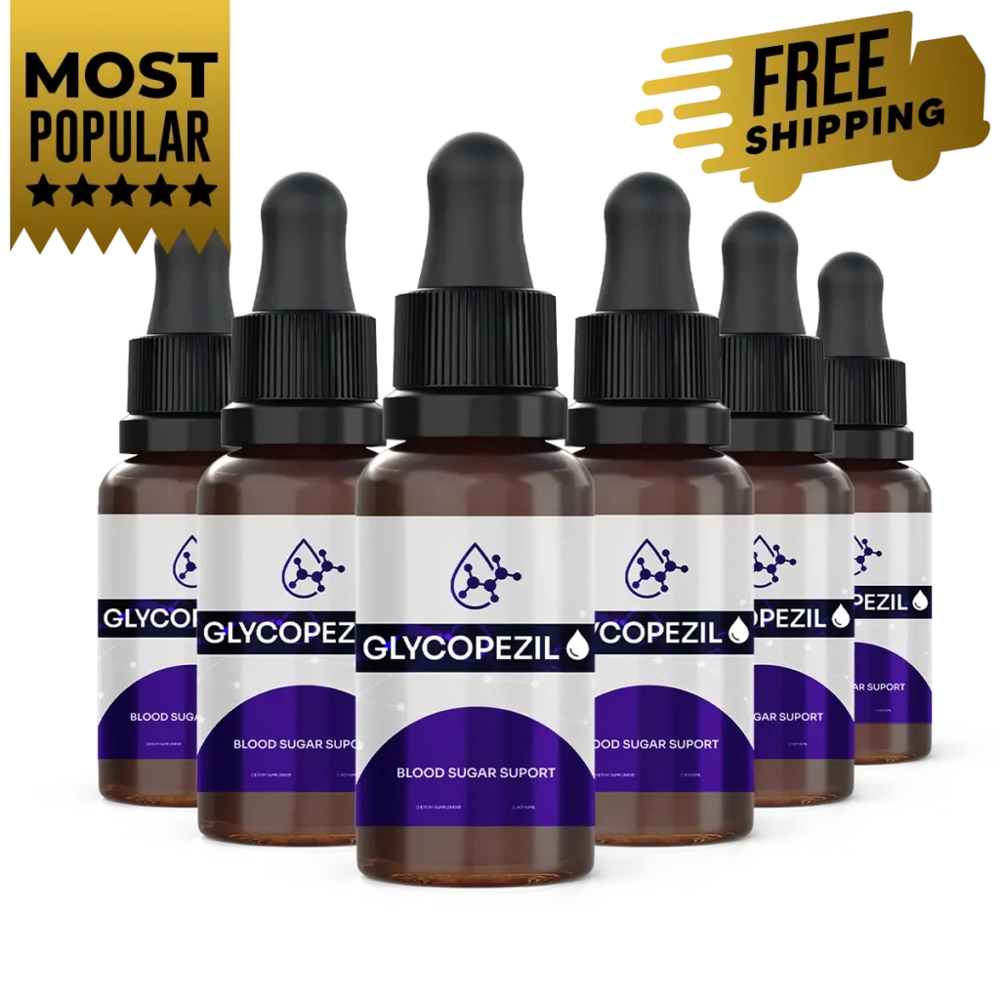
- 180-day supply (seller)
- Free US shipping
- 60-day guarantee, 30 days of use first
Against $79 bottles, three bottles save $10 each and six save $30 each. The seller also strikes through $358, $537 and $1,074, prints "you save $200 / $330 / $780" and "65% off", none of which anyone is shown paying. Its 2 bottle card says "+ shipping" while its shipping table says US shipping is free. Bottle prices · Buying checklist · Shipping info
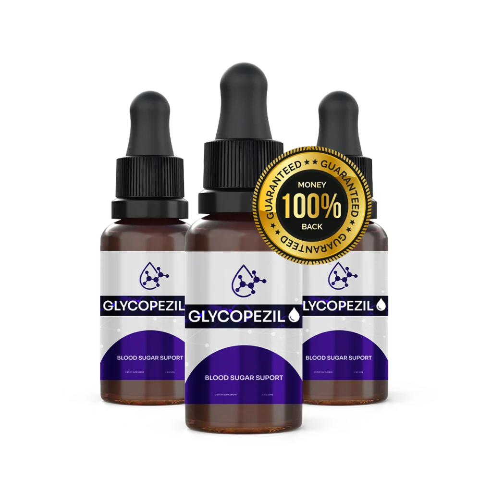
Sixty Days
GlycoPezil's 60-Day Guarantee, After 30 Days Of Use
The seller advertises a 60-day money-back guarantee from the date of purchase. If, after at least 30 days of use, you are not satisfied, you contact its support. One section of its page instead promises a "180-day" refund, while the pack cards, FAQ and guarantee section say 60.
Count on 60, ask in writing whether more applies, and set a reminder around day 45. If you feel unwell, stop the drops. See the refund policy and the sixty-day refund steps.
Check A Pack With A Guarantee The steps in detail →Extras
GlycoPezil Bonus E-Books: Titles Only, Contents Unseen
The seller says 6 free bonuses on the cards and 2 in the offer box.
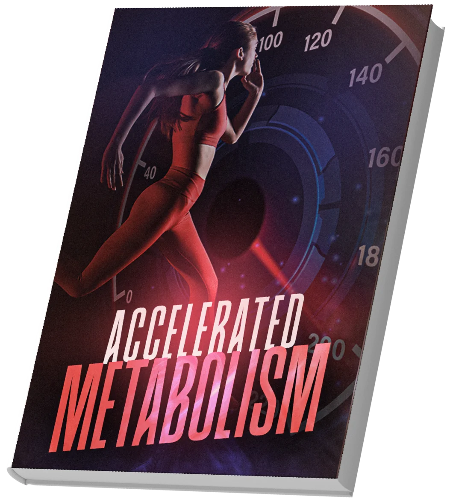
The seller describes six digital downloads. Three have neutral titles and are shown above; we cannot see what they contain. We do not show the other three, whose descriptions promise to reveal "12 medications that worsen insulin resistance", relieve "burning and tingling", and "reduce liver fat and improve vision". Treat extras as reading, never as medical advice. See the sugar claims we skip and bottle prices.
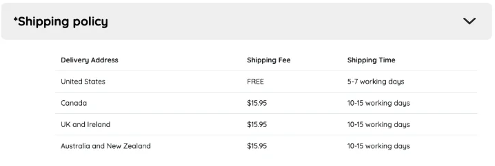
The seller's own shipping table, as supplied.
Related: Shipping info · Refund policy · Pregnancy and teens
How It Works
How GlycoPezil Is Meant To Be Used: 1 Or 2 Droppers A Day
The label says: shake well before each use, take 1 or 2 droppers full daily, place in the mouth and swallow. Do not exceed the recommended dose.*
- Talk to your doctor about the drops and every medicine you take.
- Keep your medicines exactly as prescribed.
- Shake and take 1 or 2 droppers, as the label directs.
- Keep your checks, meals and walks going.
- Decide inside the 60-day window.
Related: The daily dropper routine · Diabetes medicines and low sugar · Food, movement and sleep
Where drops sit in blood sugar care. Illustration.
The seller's story says the formula "regenerates pancreatic cells" and "improves insulin sensitivity". No study of the liquid is shown, so we do not repeat it. Why →
Ingredients
Inside GlycoPezil: Chromium And A 200 mg Blend Of 22 Ingredients
What each group is and what to watch for. The ingredients in detail →
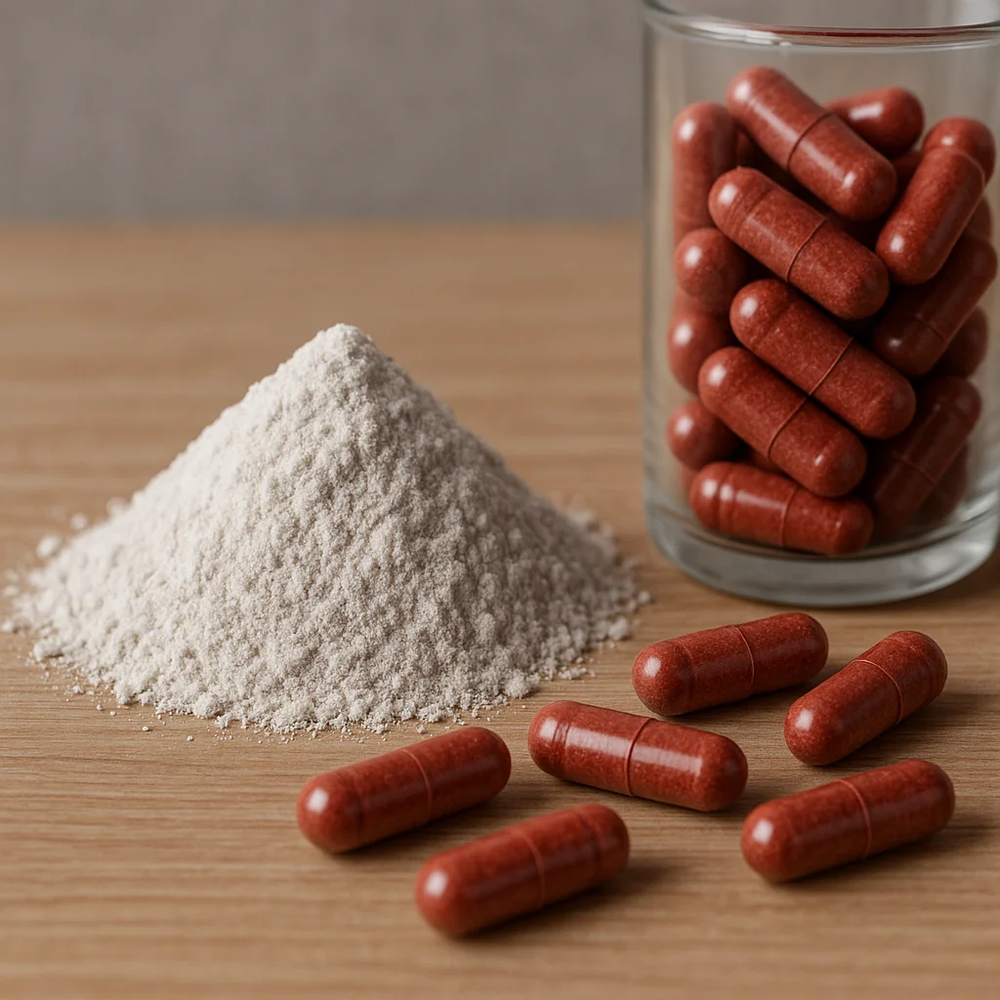
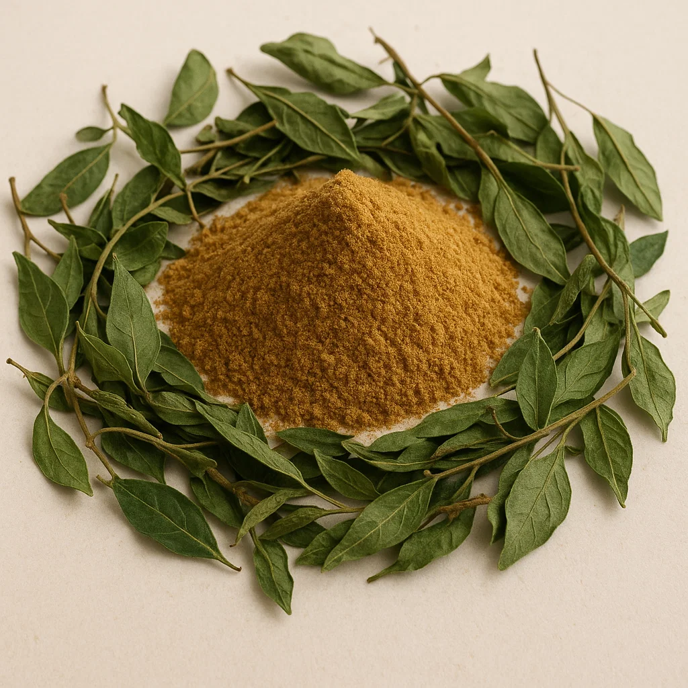
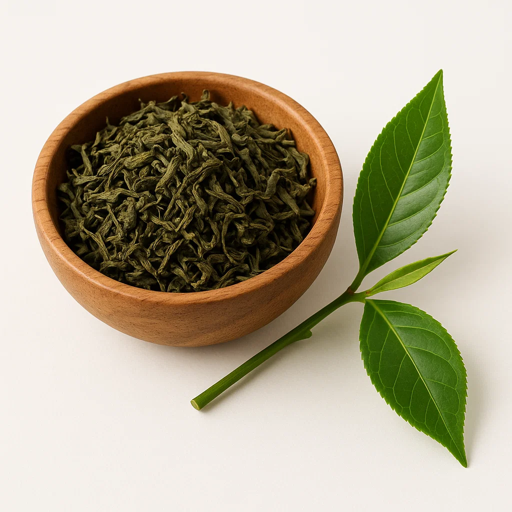
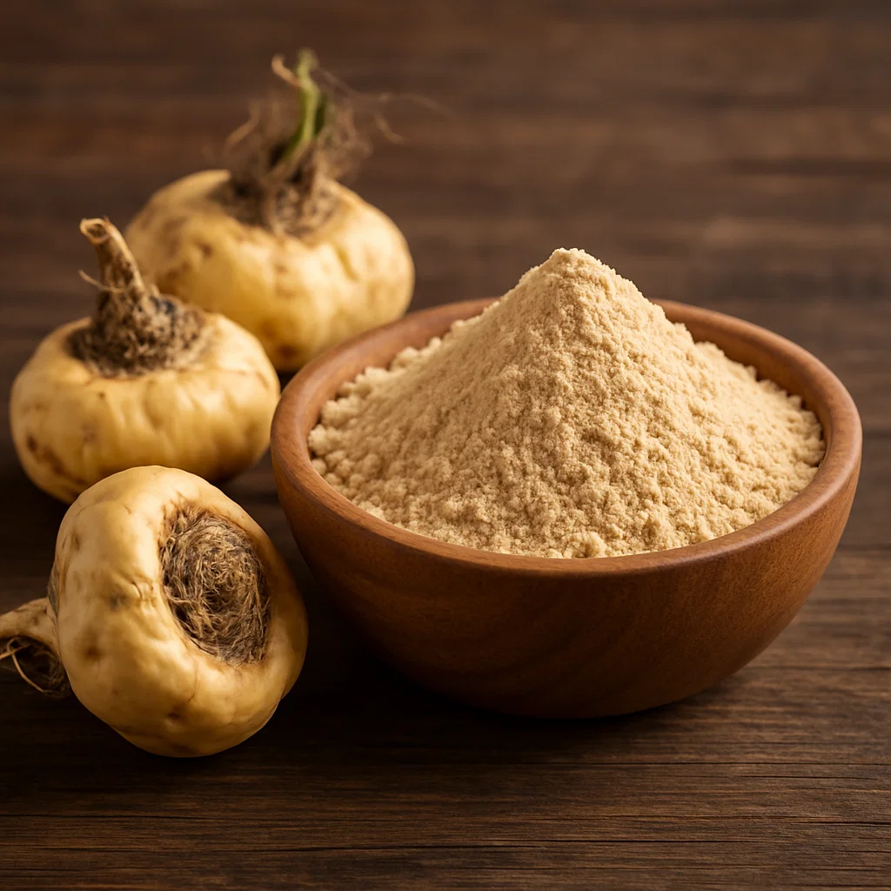
The Label At A Glance
One lump figure for 22 ingredients, and 0.7 mcg of chromium.
| GlycoPezil Supplement Facts, as printed on the bottle label | Amount |
|---|---|
| Serving size | 1 mL |
| Servings per container | 60 (2 fl oz / 60 mL) |
| Chromium (as chromium picolinate) | 0.7 mcg (2% Daily Value) |
| Proprietary blend | 200 mg per serving (Daily Value not established) |
| Blend: roots and herbs | Maca root, Eleutherococcus senticosus root, astragalus root, Panax ginseng, gymnema leaf, green tea leaf, coleus forskohlii root, capsicum, grapefruit fruit, guarana seed, African mango seed, grape seed, raspberry ketones |
| Blend: aminos and others | L-glutamine, L-tyrosine, L-arginine base, beta-alanine, GABA, L-ornithine HCl, L-tryptophan, L-carnitine base, monoammonium glycyrrhizinate |
| Other ingredients | Glycerin, water, organic lemon extract, stevia extract 97% (Reb A), xylitol, sodium benzoate, potassium sorbate, citric acid, natural flavors |
| Suggested use | Shake well; take 1 or 2 droppers full daily, in the mouth, and swallow |
| Storage and notes | Keep away from heat, light and humidity; made in the USA with globally sourced ingredients; FDA-registered facility |
How to read it: 22 ingredients share a single 200 mg figure, listed without individual amounts. Split evenly that is about 9 mg each, though the real split is not shown; trials of single ingredients use hundreds of milligrams, and the chromium is 0.7 mcg against trial doses of 200 mcg or more.
Cautions (label): do not exceed the recommended dose; not for pregnant or nursing mothers, children under 18 or people with a known medical condition without a physician; keep out of reach of children; do not use if the safety seal is damaged or missing.
A serving against typical trial doses. Illustration.
General evidence. Illustration.
A fair summary: food, movement and prescribed medicines are what manage blood sugar, gymnema has small trials at about 400 mg a day, green tea and ginseng small mixed ones, chromium small or none at far higher doses than 0.7 mcg, African mango and raspberry ketones weak evidence, and no trial of this liquid is shown.* See the blog on chromium, gymnema, green tea and ginseng.
On insulin, tablets, warfarin or blood pressure medicine? Ask first.
Honest information first · Diabetes medicines · Grapefruit, licorice, caffeine
Safety
GlycoPezil Safety: Medicines, Low Sugar, Interactions And Conditions
Six reasons to ask first.
Never Replace A Medicine
Do not stop, skip or lower insulin, metformin or any prescribed medicine because of drops. Gymnema and others can lower blood sugar further, so tell your doctor first. See diabetes medicines and low sugar and high blood sugar red flags.
Illustration.
Illustration.
A Liquid Is Not Diabetes Care
Diabetes needs diagnosis, monitoring and treatment. See see your doctor first.
| If you | Then |
|---|---|
| Take insulin or any diabetes tablet | Ask first. See diabetes medicines and low sugar. |
| Have extreme thirst, vomiting or fast breathing | Emergency care. See high blood sugar red flags. |
| Take warfarin, antidepressants, statins or blood pressure medicine | Ask first. See grapefruit, licorice and caffeine. |
| Have kidney, liver or heart disease | Ask first. See kidney, liver and heart conditions. |
| Are pregnant, nursing or under 18 | Do not start without a doctor. See pregnancy, teens, conditions. |
| Are sensitive to caffeine | Take care: guarana and green tea are in the blend. |
See A Doctor Soon For
Readings that keep rising, blurred vision, numb or sore feet, slow-healing sores or unexplained weight loss.
Keep It Away From Children
Store the bottle away from heat, light and humidity, with the safety seal intact, and out of reach.
Illustration.
Benefits
What GlycoPezil Aims To Support, And Where It Stops
Goals, never promises. The support goals →
A trial window
A 60-day guarantee after 30 days of use.
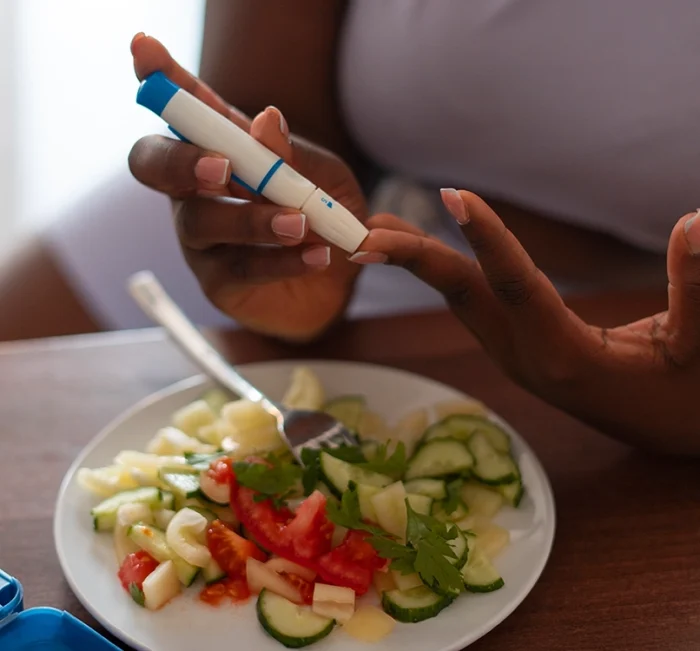
Illustrative emphasis, not measured.
The Basics Carry The Weight
Prescribed medicines, food, walks and sleep do far more for blood sugar than any liquid. See what GlycoPezil aims to support and type 2 diabetes basics.
Choose Your Pack
Comparing GlycoPezil Packs By Cost Per Day
The lowest per-bottle price, $49, is on the six bottle pack.
Starter
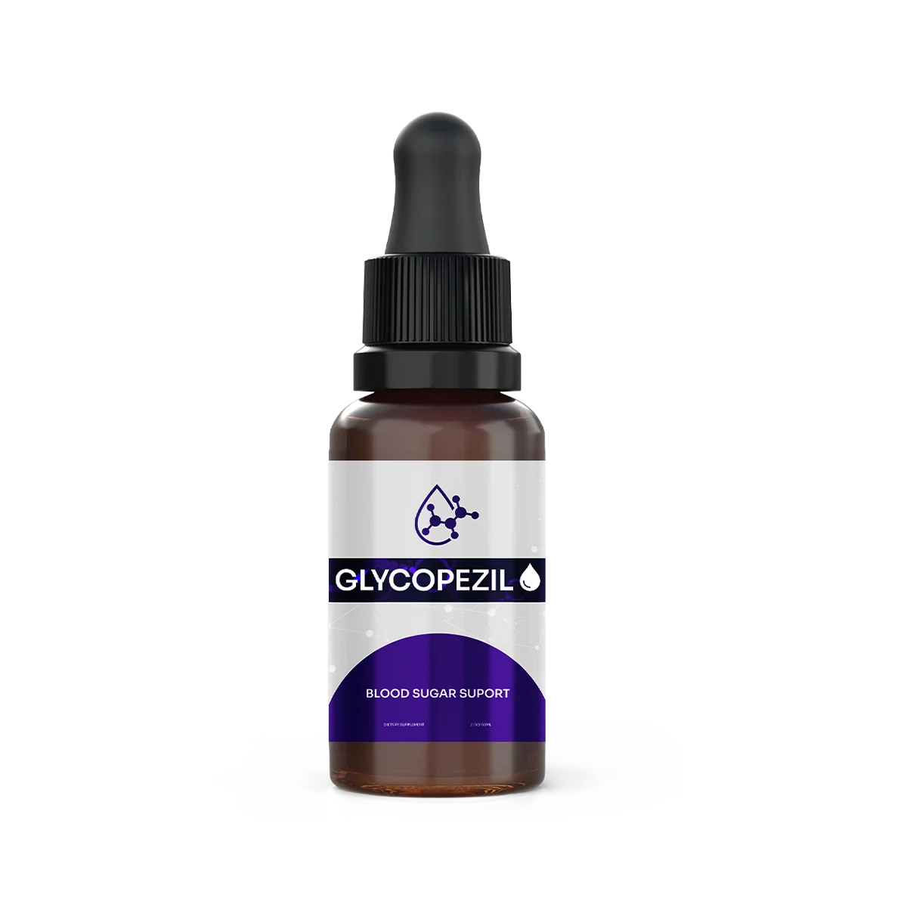
- 60-day supply (seller)
- + shipping (see note)
- 60-day guarantee, 30 days of use first
Good Value
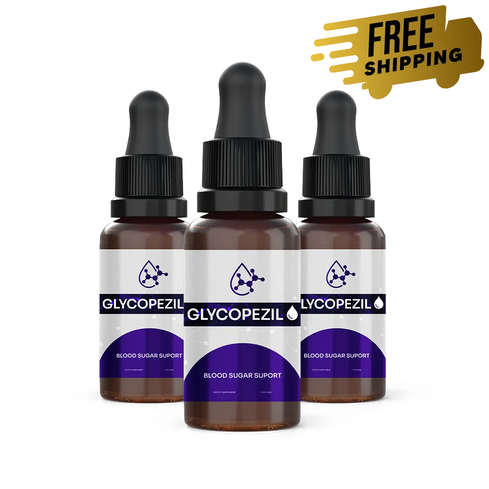
- 90-day supply (seller)
- Free US shipping
- 60-day guarantee, 30 days of use first
Best Value
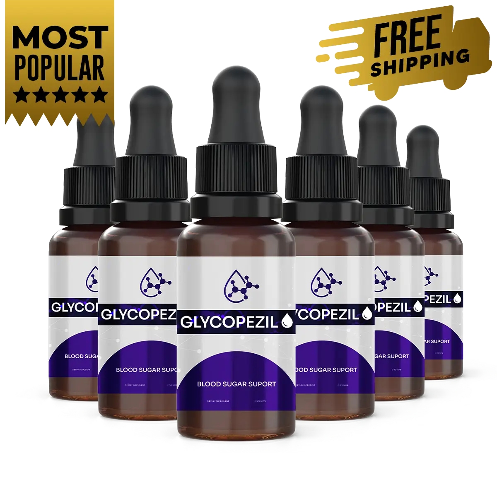
- 180-day supply (seller)
- Free US shipping
- 60-day guarantee, 30 days of use first
Cost per day. Illustration.
The Sums
Two bottles are $158 plus shipping, three are $207 and six are $294. At 2 droppers a day that is about $2.63, $2.30 and $1.63 a day, and half that at 1 dropper. See bottle prices.
Start Small If Unsure
Do not buy six bottles before you have spoken to your doctor. Start with two, and use the refund window if it is not for you. See the buying checklist and the refund steps.
Sixty days. Illustration.
Customer Reviews
GlycoPezil Customer Reviews: Questions And Honest Answers
Individual buyers cannot be verified, so no star ratings, counts or named testimonials appear here, and the photos supplied are illustrative only. The seller's page prints three five-star "Verified Purchase" stories with names and cities about better readings, plus a photo of a "doctor" recommending the product and a strip of journal logos, and we do not repeat them. Verified reviews will be added when they can be shown in full, critical ones included.
Seller-supplied photo collage; we cannot verify the people or that they bought it.
Illustrative image, not a customer.
Can I use it instead of my diabetes medicine?
Never. Do not stop, skip or lower a prescribed medicine because of a supplement, and tell your doctor before you start.
Illustrative image, not a customer.
Could it push my sugar too low?
It can. Gymnema and other ingredients may add to the effect of insulin or tablets, so ask first and keep your usual checks.
Illustrative image, not a customer.
Does it really regenerate pancreatic cells?
No such effect is supported. Beware any page that suggests you will not need your medicines.
Send yours
Used GlycoPezil? Email contact@glycopezil.onrender.com with your order number and an honest account, kind or critical. Verified reviews can appear here.
Common questions
Medicines, doses, claims and refunds. See the quick answers.
Solid facts
The label, the prices and the refund steps are spelled out here and in the blog.
Questions
GlycoPezil Questions, Answered Carefully
What is GlycoPezil?
A liquid dropper supplement (2 fl oz / 60 mL) marketed to support healthy blood sugar levels, with 0.7 mcg of chromium and a 200 mg blend of 22 ingredients per 1 mL, per its label.
What is inside?
Chromium (as picolinate) and a blend including gymnema, green tea, Panax ginseng, African mango, maca, grapefruit, coleus, guarana, raspberry ketones, eight amino acids and a licorice compound, plus glycerin, stevia, xylitol and preservatives.
Are the amounts listed?
Only chromium (0.7 mcg) and the 200 mg total for the blend. The 22 ingredients are not split out.
Can I take it instead of my diabetes medicine?
Never. Do not stop, skip or lower a prescribed medicine because of a supplement.
Could it lower my blood sugar too much?
Several ingredients, such as gymnema, can lower blood sugar further, so tell your doctor, above all with insulin or tablets.
Does it regenerate pancreatic cells?
No such effect is supported.
Is it FDA approved?
No. Supplements are not. The label says it was made in an FDA-registered facility.
Who should ask a doctor first?
Anyone with diabetes, blood pressure or heart conditions, kidney or liver disease, on warfarin or antidepressants, sensitive to caffeine, pregnant, nursing, or under 18.
What does it cost?
$79, $69 or $49 a bottle for 2, 3 or 6 bottles: $158 plus shipping, $207 or $294.
Is it a subscription?
The seller says it is a one-time order with no automatic renewals.
What is the guarantee?
60 days, after at least 30 days of use, though one section of the seller's page says 180 days, so confirm before you buy.
When is it an emergency?
Shaking, sweating, confusion, fainting or a seizure, or extreme thirst, vomiting and fast breathing.
From The Blog
The GlycoPezil Notebook: Ten Linked Entries
How blood sugar works, each ingredient group and how to judge claims.
How Blood Sugar Works
Glucose and insulin.
BasicsType 2 Diabetes: Basics And Treatment
Treat it properly.
IngredientsChromium Picolinate Evidence
0.7 mcg here.
IngredientsGymnema Sylvestre Evidence
Small trials.
IngredientsGreen Tea, EGCG And Blood Sugar
Mind the liver.
IngredientsPanax Ginseng And Glucose
Mixed results.
IngredientsAfrican Mango And Raspberry Ketones
Weak evidence.
LabelWhat A 200 mg Blend Hides
About 9 mg each.
HabitsFood, Movement And Sleep
What works.
ClaimsHow To Judge Blood Sugar Claims
Four questions.
Ready When You Are
Start With Your Doctor, Then Choose GlycoPezil
One or two droppers a day, a full label to read and a 60-day guarantee, from $49 a bottle on the six bottle pack. Order once you have told your doctor, checked every medicine and read the label line by line. See the buying checklist and bottle prices.
- Never replaces a diabetes medicine
- 22 ingredients share 200 mg
- Can lower blood sugar further
- No promise of results
The Label
The GlycoPezil Label, As Printed On The Bottle
Directions, cautions and Supplement Facts. Label gaps →
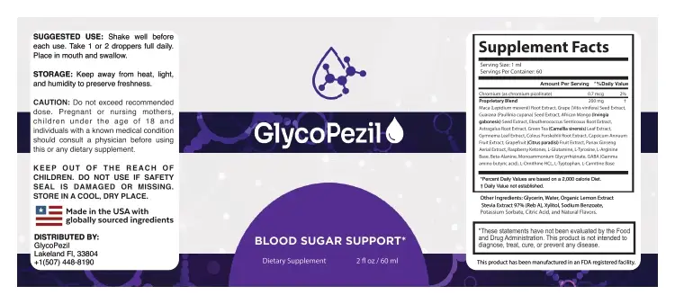
| GlycoPezil Supplement Facts, as printed on the bottle label | Amount |
|---|---|
| Serving size | 1 mL |
| Servings per container | 60 (2 fl oz / 60 mL) |
| Chromium (as chromium picolinate) | 0.7 mcg (2% Daily Value) |
| Proprietary blend | 200 mg per serving (Daily Value not established) |
| Blend: roots and herbs | Maca root, Eleutherococcus senticosus root, astragalus root, Panax ginseng, gymnema leaf, green tea leaf, coleus forskohlii root, capsicum, grapefruit fruit, guarana seed, African mango seed, grape seed, raspberry ketones |
| Blend: aminos and others | L-glutamine, L-tyrosine, L-arginine base, beta-alanine, GABA, L-ornithine HCl, L-tryptophan, L-carnitine base, monoammonium glycyrrhizinate |
| Other ingredients | Glycerin, water, organic lemon extract, stevia extract 97% (Reb A), xylitol, sodium benzoate, potassium sorbate, citric acid, natural flavors |
| Suggested use | Shake well; take 1 or 2 droppers full daily, in the mouth, and swallow |
| Storage and notes | Keep away from heat, light and humidity; made in the USA with globally sourced ingredients; FDA-registered facility |
How to read it: 22 ingredients share a single 200 mg figure, listed without individual amounts. Split evenly that is about 9 mg each, though the real split is not shown; trials of single ingredients use hundreds of milligrams, and the chromium is 0.7 mcg against trial doses of 200 mcg or more.
Cautions (label): do not exceed the recommended dose; not for pregnant or nursing mothers, children under 18 or people with a known medical condition without a physician; keep out of reach of children; do not use if the safety seal is damaged or missing.
A dietary supplement cannot be FDA approved. Read the directions and warnings on your own bottle, and see the health disclaimer.
References
Independent Reading For GlycoPezil Shoppers
None of them tested GlycoPezil itself. Our blog digs into each part →
These organizations do not endorse, sponsor or have any affiliation with GlycoPezil or this website. See also the health disclaimer.